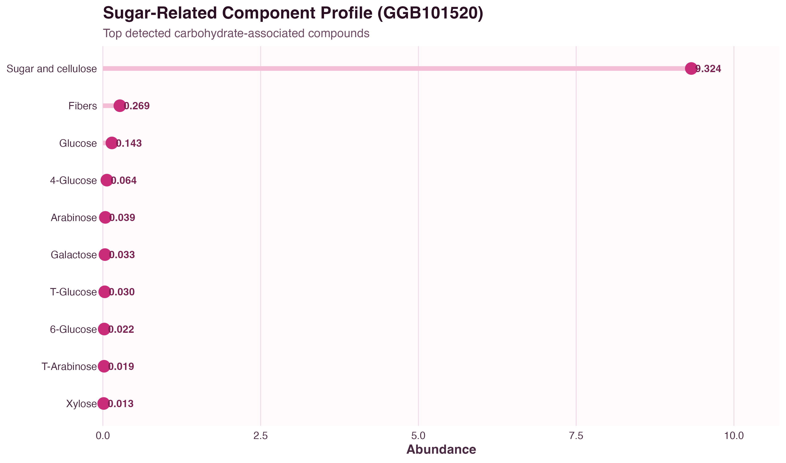
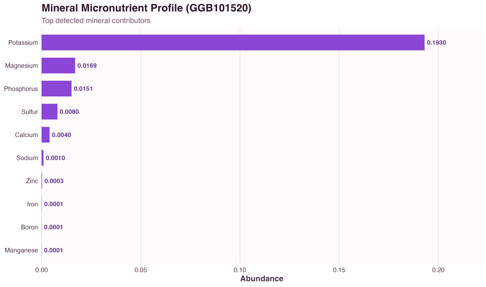
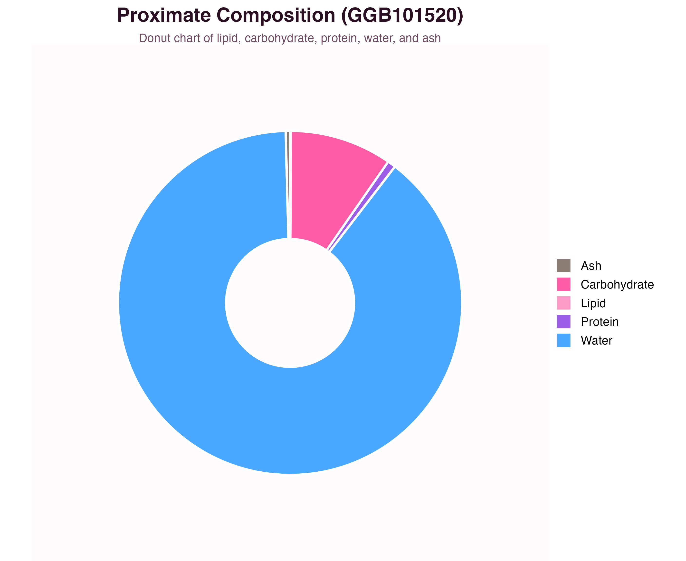

Sample GGB101520 is characterized by a high water content (89.15%), moderate carbohydrate content (9.59%), low but measurable protein (0.77%), and negligible lipid (0.07%). The sugar-related and mineral panels provide a more resolved compositional view beyond proximate analysis alone.
Competition Submission Dashboard
Red Dragon Fruit Dashboard
Analytical summary of sample GGB101520, presenting proximate composition, sugar-related compounds, mineral micronutrients, and nutritional context in a clean dashboard format suitable for judging and review.
Lipid
0.07%
Very low total lipid fraction.
Carbohydrate
9.59%
Main energy-yielding dry-matter component.
Protein
0.77%
Low but measurable protein content.
Water
89.15%
Dominant overall component in the raw fruit sample.
Ash
0.41%
Represents total mineral residue.
- Red dragon fruit is a water-rich fruit, which contributes strongly to its fresh texture and low energy density.
- The carbohydrate fraction is expected to be driven mainly by naturally occurring fruit sugars and structural carbohydrates.
- This dashboard emphasizes measured composition rather than broad dietary claims.
This panel is included as nutritional context only and should not be interpreted as a medical claim.
Figure 1

Figure 2

Figure 3

The selected sample is strongly water-dominant, with carbohydrate as the major non-water fraction, very low lipid, low protein, and measurable ash. The component-specific panels provide additional detail on sugar-related compounds and mineral contributors beyond the top-line proximate summary.
| Metric | Observed Value | Interpretation | Assessment |
|---|---|---|---|
| Water | 89.15% | Dominant component in the measured raw fruit sample. | High |
| Carbohydrate | 9.59% | Main non-water fraction. | Moderate |
| Protein | 0.77% | Present at a low level relative to total sample mass. | Low |
| Lipid | 0.07% | Negligible total fat in this profile. | Low |
| Ash | 0.41% | Indicates measurable mineral residue. | Low |